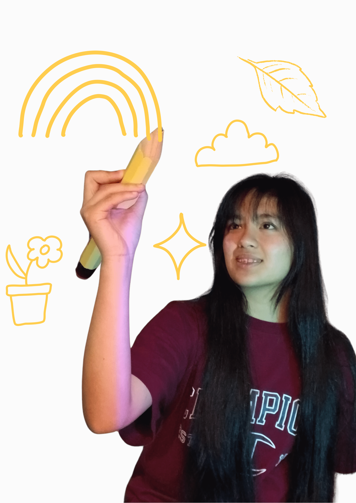

LEO
NNA
LEO
NNA
~ About me ~
Hello! I'm Leonna Pauleen Banzuela, 16 years old, year 11 at Mount Albert Grammar School, and a little lost in life... As a highschool student with big dreams yet bounded by the constraints of school, being financially dependent, and having a lack of life xp, I can't help but ponder the many possibilities life has to offer and the many paths my decisions in life lead. As for which path to pick - well... thats where I hope you'll grow with me in this journey through life. Whether you're also a lost highschool student, someone older or younger, welcome~
If you ask anyone about one core skill that I have, if they knew me, they'd instantly say that I'm creative. And I can't deny. All of my life, I've always been the type of kid to watch 5-minute crafts and make little artworks or diy-ed trinkets for people's birthdays. Art is definitely a big part of my life, and its also the whole niche of my youtube channel LeonnArt .
You know how I made this webpage? With my digital tech skills heheh. Through digital tech class and my own self-study, I've developed html, css, and python skills. I really enjoy learning about these because I've never been a big tech person, so seeing my ideas translate into the digital realm is truly amazing and is opening my eyes to new ways of thinking. Ofcourse, its not all trying to make the webpage look aesthetic, but its also learning about putting functionality first and problem solving my way to the layout that I envision. After all, I can't just drag and drop the element into a page :/
I used to hate PE. But I've come to love the thrill of running around and being a part of a team. Badminton has been my go to ever since being inspired by my older sister, Ate Bam, and brother, kuya pau. I'm not that good TvT, but its fun and invites some friendly competitiveness in my life. Ofcourse, that comes with losing, but we gotta lose in life sometimes lol.